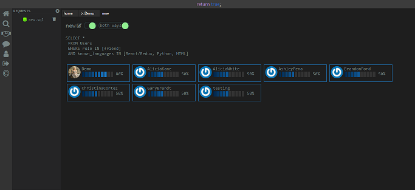
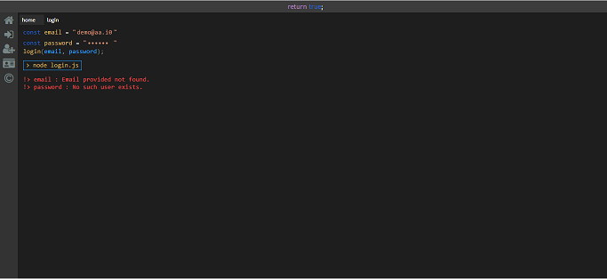
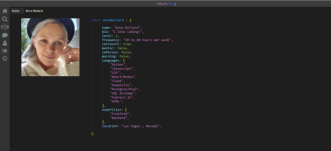

<div id="ajax-page" class="ajax-page-content">
    <div class="ajax-page-wrapper">
        <div class="ajax-page-nav">
            <div class="nav-item ajax-page-prev-next">
                <a class="ajax-page-load" href="portfolio-1.html"><i class="lnr lnr-chevron-left"></i></a>
                <a class="ajax-page-load" href="portfolio-3.html"><i class="lnr lnr-chevron-right"></i></a>
            </div>
            <div class="nav-item ajax-page-close-button">
                <a id="ajax-page-close-button" href="#"><i class="lnr lnr-cross"></i></a>
            </div>
        </div>

        <div class="ajax-page-title">
            <h1>return true;</h1>
        </div>

        <div class="row">
            <div class="col-sm-8 col-md-8 portfolio-block">
                <div class="owl-carousel portfolio-page-carousel">
                    <div class="item">
                        
                    </div>
                    <div class="item">
                        
                    </div>
                    <div class="item">
                        
                    </div>
                </div>

                <script type="text/javascript">
                    jQuery(document).ready(function($){
                        $('.portfolio-page-carousel').imagesLoaded(function(){
                            $('.portfolio-page-carousel').owlCarousel({
                                smartSpeed:1200,
                                items: 1,
                                loop: true,
                                dots: true,
                                nav: true,
                                navText: false,
                                margin: 10,
                                autoHeight:true
                            });
                        });
                    });
                </script>
            </div>

            <div class="col-sm-4 col-md-4 portfolio-block">
                <!-- Project Description -->
                <div class="project-description">
                    <div class="block-title">
                        <h3>Description</h3>
                    </div>
                    <ul class="project-general-info">
                        <li><p><i class="fa fa-user"></i>Anna Bullard, Michelle Yi, Arjun Narain, Thanh Nguyen</p></li>
                        <li><p><i class="fa fa-globe"></i> <a href="https://return-true.herokuapp.com/" target="_blank">Live</a></p></li>
                        <li><p><i class="fab fa-github"></i> <a href="https://github.com/tawnthanh/return-true" target="_blank">Repo</a></p></li>
                    </ul>

                    <p class="text-justify">Return True is a clone of OkCupid that will allow all different types of developers to reach out to each other and connect! The application's main purpose is to help individuals find their coding pair/team based on what they need and if they match based on the results of their survey.</p>
                    <!-- /Project Description -->

                    <!-- Technology -->
                    <div class="tags-block">
                        <div class="block-title">
                            <h3>Technology</h3>
                        </div>
                        <ul class="tags">
                            <li><a>JavaScript</a></li>
                            <li><a>Python</a></li>
                            <li><a>React</a></li>
                            <li><a>Redux</a></li>
                            <li><a>PostgeSQL</a></li>
                            <li><a>Flask</a></li>
                            <li><a>SQL Alchemy</a></li>
                        </ul>
                    </div>
                    <!-- /Technology -->

                </div>
                <!-- Project Description -->
            </div>
        </div>
    </div>
</div>
